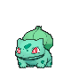
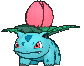
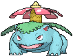
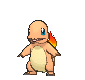
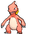
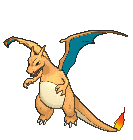
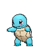
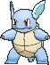
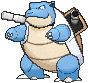

Provavelmente, o trio mais icônico entre os jogadores mais velhos da franquia, Bulbasaur, Charmander, Squirtle marcaram era como os primeiros Pokémon usados para explorar a região de Kanto.
Bulbasaur



Charmander



Squirtle



A linhagem evolutiva dos pokémons seguem o seguinte sistema abaixo:
Tem sua primeira evolução no lvl.16 e após isso evolui novamente no lvl.36